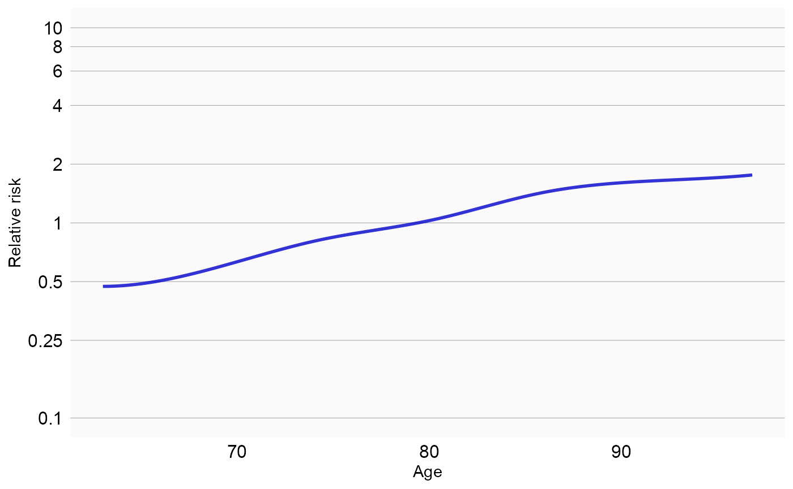
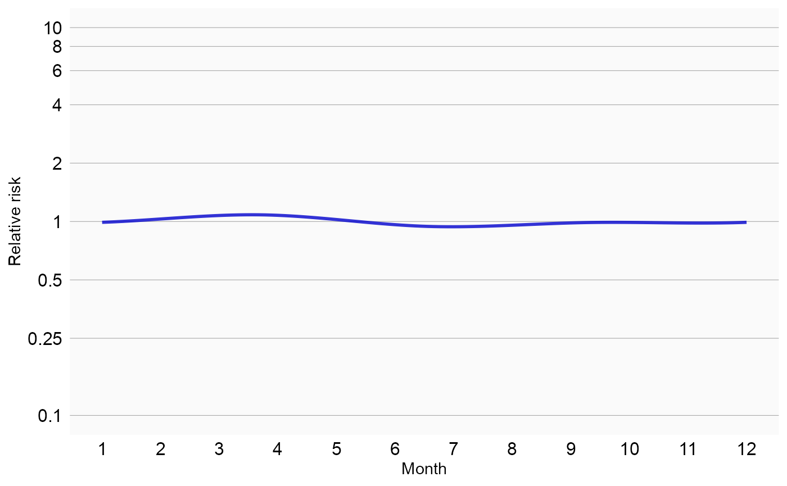
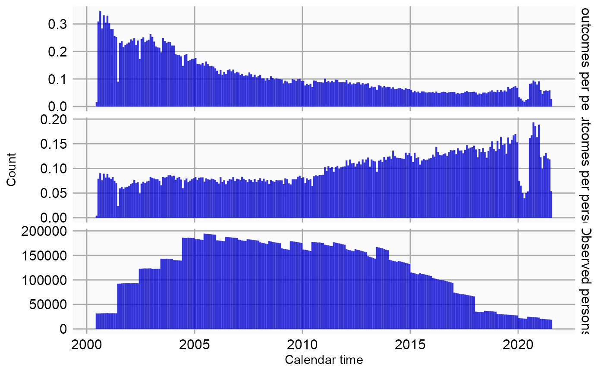

Single studies using the SelfControlledCaseSeries package
Martijn J. Schuemie, Marc A. Suchard and Patrick Ryan
2022-01-06
Source:vignettes/SingleStudies.Rmd
SingleStudies.RmdIntroduction
This vignette describes how you can use the SelfControlledCaseSeries package to perform a single Self-Controlled Case Series (SCCS) study. We will walk through all the steps needed to perform an exemplar study, and we have selected the well-studied topic of the effect of NSAIDs on gastrointestinal (GI) bleeding-related hospitalization. For simplicity, we focus on one NSAID: diclofenac.
Installation instructions
Before installing the SelfControlledCaseSeries package make sure you have Java available. For Windows users, RTools is also necessary. See these instructions for properly configuring your R environment.
The SelfControlledCaseSeries package is maintained in a Github repository, and can be downloaded and installed from within R using the remotes package:
install.packages("remotes")
library(remotes)
install_github("ohdsi/SelfControlledCaseSeries") Once installed, you can type library(SelfControlledCaseSeries) to load the package.
Overview
In the SelfControlledCaseSeries package a study requires at least three steps:
Loading the necessary data from the database.
Transforming the data into a format suitable for an SCCS study. This step includes the creation of covariates based on the variables extracted from the database, such as defining risk windows based on exposures. It also includes transforming the data into non-overlapping time intervals, with information on the various covariates and outcomes per interval.
Fitting the model using conditional Poisson regression.
In the following sections these steps will be demonstrated for increasingly complex studies.
Studies with a single drug
Configuring the connection to the server
We need to tell R how to connect to the server where the data are. SelfControlledCaseSeries uses the DatabaseConnector package, which provides the createConnectionDetails function. Type ?createConnectionDetails for the specific settings required for the various database management systems (DBMS). For example, one might connect to a PostgreSQL database using this code:
connectionDetails <- createConnectionDetails(dbms = "postgresql",
server = "localhost/ohdsi",
user = "joe",
password = "supersecret")
cdmDatabaseSchema <- "my_cdm_data"
cohortDatabaseSchema <- "my_results"
options(sqlRenderTempEmulationSchema = NULL)
cdmVersion <- "5"The last three lines define the cdmDatabaseSchema and cohortDatabaseSchema variables,as well as the CDM version. We’ll use these later to tell R where the data in CDM format live, where we have stored our cohorts of interest, and what version CDM is used. Note that for Microsoft SQL Server, databaseschemas need to specify both the database and the schema, so for example cdmDatabaseSchema <- "my_cdm_data.dbo".
Preparing the health outcome of interest
We need to define the exposures and outcomes for our study. One way to do this is by writing SQL statements against the OMOP CDM that populate a table of events in which we are interested. The resulting table should have the same structure as the cohort table in the CDM. This means it should have the fields cohort_definition_id, cohort_start_date, cohort_end_date, and subject_id.
For our example study, we have created a file called vignette.sql with the following contents:
/***********************************
File vignette.sql
***********************************/
IF OBJECT_ID('@cohortDatabaseSchema.@outcomeTable', 'U') IS NOT NULL
DROP TABLE @cohortDatabaseSchema.@outcomeTable;
SELECT 1 AS cohort_definition_id,
condition_start_date AS cohort_start_date,
condition_end_date AS cohort_end_date,
condition_occurrence.person_id AS subject_id
INTO @cohortDatabaseSchema.@outcomeTable
FROM @cdmDatabaseSchema.condition_occurrence
INNER JOIN @cdmDatabaseSchema.visit_occurrence
ON condition_occurrence.visit_occurrence_id = visit_occurrence.visit_occurrence_id
WHERE condition_concept_id IN (
SELECT descendant_concept_id
FROM @cdmDatabaseSchema.concept_ancestor
WHERE ancestor_concept_id = 192671 -- GI - Gastrointestinal haemorrhage
)
AND visit_occurrence.visit_concept_id IN (9201, 9203);This is parameterized SQL which can be used by the SqlRender package. We use parameterized SQL so we do not have to pre-specify the names of the CDM and cohort schemas. That way, if we want to run the SQL on a different schema, we only need to change the parameter values; we do not have to change the SQL code. By also making use of translation functionality in SqlRender, we can make sure the SQL code can be run in many different environments.
library(SqlRender)
sql <- readSql("vignette.sql")
sql <- render(sql,
cdmDatabaseSchema = cdmDatabaseSchema,
cohortDatabaseSchema = cohortDatabaseSchema
outcomeTable = "my_outcomes")
sql <- translate(sql, targetDialect = connectionDetails$dbms)
connection <- connect(connectionDetails)
executeSql(connection, sql)In this code, we first read the SQL from the file into memory. In the next line, we replace the three parameter names with the actual values. We then translate the SQL into the dialect appropriate for the DBMS we already specified in the connectionDetails. Next, we connect to the server, and submit the rendered and translated SQL.
If all went well, we now have a table with the outcome of interest. We can see how many events:
sql <- paste("SELECT cohort_definition_id, COUNT(*) AS count",
"FROM @cohortDatabaseSchema.@outcomeTable",
"GROUP BY cohort_definition_id")
sql <- render(sql,
cohortDatabaseSchema = cohortDatabaseSchema,
outcomeTable = "my_outcomes")
sql <- translate(sql, targetDialect = connectionDetails$dbms)
querySql(connection, sql)## cohort_concept_id count
## 1 1 1029443Extracting the data from the server
Now we can tell SelfControlledCaseSeries to extract all necessary data for our analysis:
diclofenac <- 1124300
sccsData <- getDbSccsData(connectionDetails = connectionDetails,
cdmDatabaseSchema = cdmDatabaseSchema,
outcomeDatabaseSchema = cohortDatabaseSchema,
outcomeTable = outcomeTable,
outcomeIds = 1,
exposureDatabaseSchema = cdmDatabaseSchema,
exposureTable = "drug_era",
exposureIds = diclofenac,
cdmVersion = cdmVersion)
sccsData## # SccsData object
##
## Exposure cohort ID(s): 1124300
## Outcome cohort ID(s): 1
##
## Inherits from Andromeda:
## # Andromeda object
## # Physical location: C:\Users\mschuemi.EU\AppData\Local\Temp\Rtmp2BV0uM\file225c4c227a7.sqlite
##
## Tables:
## $cases (observationPeriodId, caseId, personId, observationDays, startYear, startMonth, startDay, ageInDays, censoredDays, noninformativeEndCensor)
## $eraRef (eraType, eraId, eraName)
## $eras (eraType, caseId, eraId, value, startDay, endDay)There are many parameters, but they are all documented in the SelfControlledCaseSeries manual. In short, we are pointing the function to the table created earlier and indicating which cohort ID in that table identifies the outcome. Note that it is possible to fetch the data for multiple outcomes at once. We further point the function to the drug_era table, and specify the concept ID of our exposure of interest: diclofenac. Again, note that it is also possible to fetch data for multiple drugs at once. In fact, when we do not specify any exposure IDs the function will retrieve the data for all the drugs found in the drug_era table.
All data about the patients, outcomes and exposures are extracted from the server and stored in the sccsData object. This object uses the Andromeda package to store information in a way that ensures R does not run out of memory, even when the data are large.
We can use the generic summary() function to view some more information of the data we extracted:
summary(sccsData)## SccsData object summary
##
## Exposure cohort ID(s): 1124300
## Outcome cohort ID(s): 1
##
## Outcome counts:
## Outcome Subjects Outcome Events Outcome Observation Periods
## 1 441552 3167367 445224
##
## Eras:
## Number of era types: 2
## Number of eras: 3282443Saving the data to file
Creating the sccsData file can take considerable computing time, and it is probably a good idea to save it for future sessions. Because sccsData uses Andromeda, we cannot use R’s regular save function. Instead, we’ll have to use the saveSccsData() function:
saveSccsData(sccsData, "diclofenacAndGiBleed.zip")We can use the loadSccsData() function to load the data in a future session.
Creating the study population
From the data fetched from the server we can now define the population we wish to study. If we retrieved data for multiple outcomes, we should now select only one, and possibly impose further restrictions:
studyPop <- createStudyPopulation(sccsData = sccsData,
outcomeId = 1,
firstOutcomeOnly = FALSE,
naivePeriod = 180)Here we specify we wish to study the outcome with ID 1. Since this was the only outcome for which we fetched the data, we could also have skipped this argument. We furthermore specify that the first 180 days of observation of every person, the so-called ‘naive period’, will be excluded from the analysis. Note that data in the naive period will be used to determine exposure status at the start of follow-up (after the end of the naive period). We also specify we will use all occurrences of the outcome, not just the first one per person.
We can find out how many people (if any) were removed by any restrictions we imposed:
getAttritionTable(studyPop)## # A tibble: 2 x 5
## outcomeId description outcomeSubjects outcomeEvents outcomeObsPerio~
## <dbl> <chr> <dbl> <dbl> <dbl>
## 1 1 Outcomes 441552 3167367 445224
## 2 1 180 days naive period 397221 2873478 399607Defining a simple model
Next, we can use the data to define a simple model to fit:
covarDiclofenac <- createEraCovariateSettings(label = "Exposure of interest",
includeEraIds = diclofenac,
start = 0,
end = 0,
endAnchor = "era end")
sccsIntervalData <- createSccsIntervalData(studyPopulation = studyPop,
sccsData = sccsData,
eraCovariateSettings = covarDiclofenac)
summary(sccsIntervalData)## SccsIntervalData object summary
##
## Outcome cohort ID: 1
##
## Number of cases (observation periods): 49985
## Number of eras (spans of time): 99970
## Number of outcomes: 380313
## Number of covariates: 1
## Number of non-zero covariate values: 49985In this example, we use the createEraCovariateSettings to define a single covariate: exposure to diclofenac. We specify that the risk window is from start of exposure to the end by setting start and end to 0, and defining the anchor for the end to be the era end, which for drug eras is the end of exposure.
We then use the covariate definition in the createSccsIntervalData function to generate the sccsIntervalData. This represents the data in non-overlapping time intervals, with information on the various covariates and outcomes per interval.
Power calculations
Before we start fitting an outcome model, we might be interested to know whether we have sufficient power to detect a particular effect size. It makes sense to perform these power calculations once the study population has been fully defined, so taking into account loss to the various inclusion and exclusion criteria. This means we will use the sccsIntervalData object we’ve just created as the basis for our power calculations. Since the sample size is fixed in retrospective studies (the data has already been collected), and the true effect size is unknown, the SelfControlledCaseSeries package provides a function to compute the minimum detectable relative risk (MDRR) instead:
computeMdrr(sccsIntervalData,
exposureCovariateId = 1000,
alpha = 0.05,
power = 0.8,
twoSided = TRUE,
method = "binomial")## # A tibble: 1 x 6
## timeExposed timeTotal propTimeExposed propPopExposued events mdrr
## <dbl> <dbl> <dbl> <dbl> <dbl> <dbl>
## 1 8767035 155897307 0.0562 1 380313 1.02Note that we have to provide the covariate ID of the exposure of interest, which we learned by calling summary on sccsIntervalData earlier. This is because we may have many covariates in our model, but will likely only be interested in the MDRR of one.
Model fitting
The fitSccsModel function is used to fit the model:
model <- fitSccsModel(sccsIntervalData)We can inspect the resulting model:
model## SccsModel object
##
## Outcome ID: 1
##
## Outcome count:
## outcomeSubjects outcomeEvents outcomeObsPeriods
## 1 397221 2873478 399607
##
## Estimates:
## # A tibble: 1 x 7
## Name ID Estimate LB95CI UB95CI LogRr SeLogRr
## <chr> <dbl> <dbl> <dbl> <dbl> <dbl> <dbl>
## 1 Exposure of interest: diclofenac 1000 1.31 1.29 1.33 0.272 0.00711This tells us what the estimated relative risk (the incidence rate ratio) is during exposure to diclofenac compared to non-exposed time.
Adding a pre-exposure window
The fact that NSAIDs like diclofenac can cause GI bleeds is well known to doctors, and this knowledge affects prescribing behavior. For example, a patient who has just had a GI bleed is not likely to be prescribed diclofenac. This may lead to underestimation of the rate during unexposed time, because the unexposed time includes time just prior to exposure where observing of the outcome is unlikely because of this behavior. One solution to this problem that is often used is to introduce a separate ‘risk window’ just prior to exposure, to separate it from the remaining unexposed time. We can add such a ‘pre-exposure window’ to our analysis:
covarPreDiclofenac <- createEraCovariateSettings(label = "Pre-exposure",
includeEraIds = diclofenac,
start = -60,
end = -1,
endAnchor = "era start")
sccsIntervalData <- createSccsIntervalData(studyPopulation = studyPop,
sccsData = sccsData,
eraCovariateSettings = list(covarDiclofenac,
covarPreDiclofenac))
model <- fitSccsModel(sccsIntervalData)Here we created a new covariate definition in addition to the first one. We define the risk window to start 60 days prior to exposure, and end on the day just prior to exposure. We combine the two covariate settings in a list for the createSccsIntervalData function. Again, we can take a look at the results:
model## SccsModel object
##
## Outcome ID: 1
##
## Outcome count:
## outcomeSubjects outcomeEvents outcomeObsPeriods
## 1 397221 2873478 399607
##
## Estimates:
## # A tibble: 2 x 7
## Name ID Estimate LB95CI UB95CI LogRr SeLogRr
## <chr> <dbl> <dbl> <dbl> <dbl> <dbl> <dbl>
## 1 Exposure of interest: diclofenac 1000 1.29 1.27 1.31 0.255 0.00719
## 2 Pre-exposure: diclofenac 1001 0.797 0.783 0.811 -0.227 0.00883Here we indeed see a lower relative risk in the time preceding the exposure, indicating the outcome might be a contra-indication for the drug of interest.
Splitting risk windows
Often we will want to split the risk windows into smaller parts and compute estimates for each part. This can give us insight into the temporal distribution of the risk. We can add this to the model:
covarDiclofenacSplit <- createEraCovariateSettings(label = "Exposure of interest",
includeEraIds = diclofenac,
start = 0,
end = 0,
endAnchor = "era end",
splitPoints = c(7, 14))
covarPreDiclofenacSplit <- createEraCovariateSettings(label = "Pre-exposure",
includeEraIds = diclofenac,
start = -60,
end = -1,
endAnchor = "era start",
splitPoints = c(-30))
sccsIntervalData <- createSccsIntervalData(studyPopulation = studyPop,
sccsData = sccsData,
eraCovariateSettings = list(covarDiclofenacSplit,
covarPreDiclofenacSplit))Here we’ve redefined out covariate definitions: We kept the same start and end dates, but enforced split points for the main exposure windows at 7 and 14 days. For the pre-exposure window we divided the window into two, at day 30 before the exposure start. Note that the split point dates indicate the end date of the preceding part, so the exposure is now split into day 0 to (and including) day 7, day 8 to (and including) day 14, and day 15 until the end of exposure. The results are:
model## SccsModel object
##
## Outcome ID: 1
##
## Outcome count:
## outcomeSubjects outcomeEvents outcomeObsPeriods
## 1 397221 2873478 399607
##
## Estimates:
## # A tibble: 5 x 7
## Name ID Estimate LB95CI UB95CI LogRr SeLogRr
## <chr> <dbl> <dbl> <dbl> <dbl> <dbl> <dbl>
## 1 Exposure of interest: diclofenac~ 1000 0.971 0.931 1.01 -0.0292 0.0212
## 2 Exposure of interest: diclofenac~ 1001 1.48 1.42 1.54 0.392 0.0193
## 3 Exposure of interest: diclofenac~ 1002 1.31 1.29 1.33 0.271 0.00801
## 4 Pre-exposure: diclofenac, day -6~ 1003 0.884 0.865 0.904 -0.123 0.0113
## 5 Pre-exposure: diclofenac, day -2~ 1004 0.701 0.683 0.720 -0.355 0.0132We see that the risk for the three exposure windows is more or less the same, suggesting a constant risk. We also see that the period 60 to 30 days prior to exposure does not seem to show a decreased risk, suggesting the effect of the contra-indication does not extend more than 30 days before the exposure.
Including age, seasonality, and calendar time
Often both the rate of exposure and the outcome change with age, and can even depend on the season or calendar time in general (e.g. rates may be higher in 2021 compared to 2020). This may lead to confounding and may bias our estimates. To correct for this we can include age, season, and/or calendar time into the model.
For computational reasons we assume the effect of age, season, and calendar time are constant within each calendar month. We assume that the rate from one month to the next can be different, but we also assume that subsequent months have somewhat similar rates. This is implemented by using cubic spline functions.
 Figure 1. Example of how a spline is used for seasonality: within a month, the risk attributable to seasonality is assumed to be constant, but from month to month the risks are assumed to follow a cyclic cubic spline.
Figure 1. Example of how a spline is used for seasonality: within a month, the risk attributable to seasonality is assumed to be constant, but from month to month the risks are assumed to follow a cyclic cubic spline.
Note that the by default all people that have the outcome will be used to estimate the effect of age and seasonality on the outcome, so not just the people exposed to the drug of interest. We can add age, seasonality, and calendar time like this:
ageCovariateSettings <- createAgeCovariateSettings(ageKnots = 5)
seasonalityCovariateSettings <- createSeasonalityCovariateSettings(seasonKnots = 5)
calendarTimeSettings <- createCalendarTimeCovariateSettings(calendarTimeKnots = 5)
sccsIntervalData <- createSccsIntervalData(studyPopulation = studyPop,
sccsData = sccsData,
eraCovariateSettings = list(covarDiclofenacSplit,
covarPreDiclofenacSplit),
ageCovariateSettings = ageCovariateSettings,
seasonalityCovariateSettings = seasonalityCovariateSettings,
calendarTimeCovariateSettings = calendarTimeSettings)
model <- fitSccsModel(sccsIntervalData)Again, we can inspect the model:
model## SccsModel object
##
## Outcome ID: 1
##
## Outcome count:
## outcomeSubjects outcomeEvents outcomeObsPeriods
## 1 397221 2873478 399607
##
## Estimates:
## # A tibble: 18 x 7
## Name ID Estimate LB95CI UB95CI LogRr SeLogRr
## <chr> <dbl> <dbl> <dbl> <dbl> <dbl> <dbl>
## 1 Age spline component 1 100 1.75 NA NA 0.557 NA
## 2 Age spline component 2 101 2.08 NA NA 0.731 NA
## 3 Age spline component 3 102 3.62 NA NA 1.29 NA
## 4 Age spline component 4 103 3.44 NA NA 1.23 NA
## 5 Age spline component 5 104 3.72 NA NA 1.31 NA
## 6 Seasonality spline component 1 200 0.909 NA NA -0.0952 NA
## 7 Seasonality spline component 2 201 1.15 NA NA 0.137 NA
## 8 Seasonality spline component 3 202 0.847 NA NA -0.166 NA
## 9 Calendar time spline component~ 300 2.22 NA NA 0.798 NA
## 10 Calendar time spline component~ 301 2.79 NA NA 1.02 NA
## 11 Calendar time spline component~ 302 6.70 NA NA 1.90 NA
## 12 Calendar time spline component~ 303 13.9 NA NA 2.63 NA
## 13 Calendar time spline component~ 304 7.66 NA NA 2.04 NA
## 14 Exposure of interest: diclofen~ 1000 0.949 0.910 0.989 -0.0524 0.0212
## 15 Exposure of interest: diclofen~ 1001 1.46 1.40 1.51 0.377 0.0194
## 16 Exposure of interest: diclofen~ 1002 1.42 1.40 1.44 0.351 0.00802
## 17 Pre-exposure: diclofenac, day ~ 1003 0.865 0.846 0.884 -0.145 0.0114
## 18 Pre-exposure: diclofenac, day ~ 1004 0.685 0.667 0.703 -0.378 0.0132We see that our estimates for exposed and pre-exposure time have not changes much. We can plot the spline curves for age, season, and calendar time to learn more:
plotAgeEffect(model)
plotSeasonality(model)
plotCalendarTimeEffect(model)We see a strong effect for age on the outcome, but this effect is spread out over many years and so it less likely to affect the estimates for any individual, since most people are only observed for a few years in the database. We do not see a strong effect for season, but we do see an increasing trend over the years, with a drop near the end of observation time.
Considering event-dependent observation time
The SCCS method requires that observation periods are independent of outcome times. This requirement is violated when outcomes increase the mortality rate, since censoring of the observation periods is then event-dependent. A modification to the SCCS has been proposed that attempts to correct for this. First, several models are fitted to estimate the amount and shape of the event-dependent censoring, and the best fitting model is selected. Next, this model is used to reweigh various parts of the observation time. This approach is also implemented in this package, and can be turned on using the eventDependentObservation argument of the createSccsIntervalData function:
sccsIntervalData <- createSccsIntervalData(studyPopulation = studyPop,
sccsData = sccsData,
eraCovariateSettings = list(covarDiclofenacSplit,
covarPreDiclofenacSplit),
ageCovariateSettings = ageCovariateSettings,
seasonalityCovariateSettings = seasonalityCovariateSettings,
calendarTimeCovariateSettings = calendarTimeSettings,
eventDependentObservation = TRUE)
model <- fitSccsModel(sccsIntervalData)Again, we can inspect the model:
model## SccsModel object
##
## Outcome ID: 1
##
## Outcome count:
## outcomeSubjects outcomeEvents outcomeObsPeriods
## 1 397221 2873478 399607
##
## Estimates:
## # A tibble: 13 x 7
## Name ID Estimate LB95CI UB95CI LogRr SeLogRr
## <chr> <dbl> <dbl> <dbl> <dbl> <dbl> <dbl>
## 1 Seasonality spline component 1 200 0.870 NA NA -0.139 NA
## 2 Seasonality spline component 2 201 1.25 NA NA 0.225 NA
## 3 Seasonality spline component 3 202 0.868 NA NA -0.142 NA
## 4 Calendar time spline component~ 300 0.478 NA NA -0.738 NA
## 5 Calendar time spline component~ 301 0.266 NA NA -1.32 NA
## 6 Calendar time spline component~ 302 0.128 NA NA -2.06 NA
## 7 Calendar time spline component~ 303 0.0659 NA NA -2.72 NA
## 8 Calendar time spline component~ 304 0.0165 NA NA -4.11 NA
## 9 Exposure of interest: diclofen~ 1000 0.972 0.932 1.01 -0.0284 0.0211
## 10 Exposure of interest: diclofen~ 1001 1.49 1.44 1.55 0.400 0.0193
## 11 Exposure of interest: diclofen~ 1002 1.47 1.45 1.49 0.384 0.00790
## 12 Pre-exposure: diclofenac, day ~ 1003 0.916 0.896 0.936 -0.0879 0.0114
## 13 Pre-exposure: diclofenac, day ~ 1004 0.712 0.693 0.730 -0.340 0.0132Studies with more than one drug
Although we are usually interested in the effect of a single drug or drug class, it could be beneficial to add exposure to other drugs to the analysis if we believe those drugs represent time-varying confounders that we wish to correct for.
Adding a class of drugs
For example, oftentimes diclofenac is co-prescribed with proton-pump inhibitors (PPIs) to mitigate the risk of GI bleeding. We would like our estimate to represent just the effect of the diclofenac, so we need to keep the effect of the PPIs separate. First we have to retrieve the information on PPI exposure from the database:
diclofenac <- 1124300
ppis <- c(911735, 929887, 923645, 904453, 948078, 19039926)
sccsData <- getDbSccsData(connectionDetails = connectionDetails,
cdmDatabaseSchema = cdmDatabaseSchema,
outcomeDatabaseSchema = cohortDatabaseSchema,
outcomeTable = outcomeTable,
outcomeIds = 1,
exposureDatabaseSchema = cdmDatabaseSchema,
exposureTable = "drug_era",
exposureIds = c(diclofenac, ppis),
cdmVersion = cdmVersion)
sccsData## # SccsData object
##
## Exposure cohort ID(s): 1124300,911735,929887,923645,904453,948078,19039926
## Outcome cohort ID(s): 1
##
## Inherits from Andromeda:
## # Andromeda object
## # Physical location: C:\Users\mschuemi.EU\AppData\Local\Temp\Rtmp2BV0uM\file225c14661446.sqlite
##
## Tables:
## $cases (observationPeriodId, caseId, personId, observationDays, startYear, startMonth, startDay, ageInDays, censoredDays, noninformativeEndCensor)
## $eraRef (eraType, eraId, eraName)
## $eras (eraType, caseId, eraId, value, startDay, endDay)Once retrieved, we can use the data to build and fit our model:
studyPop <- createStudyPopulation(sccsData = sccsData,
outcomeId = 1,
firstOutcomeOnly = FALSE,
naivePeriod = 180)
covarPpis <- createEraCovariateSettings(label = "PPIs",
includeEraIds = ppis,
stratifyById = FALSE,
start = 1,
end = 0,
endAnchor = "era end")
sccsIntervalData <- createSccsIntervalData(studyPopulation = studyPop,
sccsData = sccsData,
eraCovariateSettings = list(covarDiclofenacSplit,
covarPreDiclofenacSplit,
covarPpis),
ageCovariateSettings = ageCovariateSettings,
seasonalityCovariateSettings = seasonalityCovariateSettings,
calendarTimeCovariateSettings = calendarTimeSettings,
eventDependentObservation = TRUE)
model <- fitSccsModel(sccsIntervalData)Here, we added a new covariate based on the list of concept IDs for the various PPIs. In this example we set stratifyById to FALSE, meaning that we will estimate a single incidence rate ratio for all PPIs, so one estimate for the entire class of drugs. Note that duplicates will be removed: if a person is exposed to two PPIs on the same day, this will be counted only once when fitting the model. Furthermore, we have set the start day to 1 instead of 0. The reason for this is that PPIs will also be used to treat GI bleeds, and are likely to be prescribed on the same day as the event. If we would include day 0, the risk of the outcome would be attributed to the PPI used for treatment, not the other factors that caused the GI bleed such as any exposure to our drug of interest. Again, we can inspect the model:
model## SccsModel object
##
## Outcome ID: 1
##
## Outcome count:
## outcomeSubjects outcomeEvents outcomeObsPeriods
## 1 397221 2873478 399607
##
## Estimates:
## # A tibble: 14 x 7
## Name ID Estimate LB95CI UB95CI LogRr SeLogRr
## <chr> <dbl> <dbl> <dbl> <dbl> <dbl> <dbl>
## 1 Seasonality spline component 1 200 0.950 NA NA -0.0513 NA
## 2 Seasonality spline component 2 201 1.25 NA NA 0.221 NA
## 3 Seasonality spline component 3 202 0.943 NA NA -0.0588 NA
## 4 Calendar time spline component~ 300 0.527 NA NA -0.641 NA
## 5 Calendar time spline component~ 301 0.201 NA NA -1.60 NA
## 6 Calendar time spline component~ 302 0.123 NA NA -2.09 NA
## 7 Calendar time spline component~ 303 0.0653 NA NA -2.73 NA
## 8 Calendar time spline component~ 304 0.0157 NA NA -4.16 NA
## 9 Exposure of interest: diclofen~ 1000 0.984 0.944 1.03 -0.0163 0.0212
## 10 Exposure of interest: diclofen~ 1001 1.51 1.45 1.57 0.412 0.0192
## 11 Exposure of interest: diclofen~ 1002 1.48 1.45 1.50 0.389 0.00791
## 12 Pre-exposure: diclofenac, day ~ 1003 0.920 0.900 0.941 -0.0830 0.0115
## 13 Pre-exposure: diclofenac, day ~ 1004 0.717 0.698 0.735 -0.333 0.0132
## 14 PPIs 1005 0.665 0.663 0.668 -0.408 0.00191We do see a decrease in risk when people are exposed to PPIs.
Adding all drugs
Another approach could be to add all drugs into the model. Again, the first step is to get all the relevant data from the database:
sccsData <- getDbSccsData(connectionDetails = connectionDetails,
cdmDatabaseSchema = cdmDatabaseSchema,
outcomeDatabaseSchema = cohortDatabaseSchema,
outcomeTable = outcomeTable,
outcomeIds = 1,
exposureDatabaseSchema = cdmDatabaseSchema,
exposureTable = "drug_era",
exposureIds = c(),
cdmVersion = cdmVersion)Note that the exposureIds argument is left empty. This will cause data for all concepts in the exposure table to be retrieved. Next, we simply create a new set of covariates, and fit the model:
studyPop <- createStudyPopulation(sccsData = sccsData,
outcomeId = 1,
firstOutcomeOnly = FALSE,
naivePeriod = 180)
covarAllDrugs <- createEraCovariateSettings(label = "Other exposures",
excludeEraIds = diclofenac,
stratifyById = TRUE,
start = 1,
end = 0,
endAnchor = "era end",
allowRegularization = TRUE)
sccsIntervalData <- createSccsIntervalData(studyPopulation = studyPop,
sccsData = sccsData,
eraCovariateSettings = list(covarDiclofenacSplit,
covarPreDiclofenacSplit,
covarAllDrugs),
ageCovariateSettings = ageCovariateSettings,
seasonalityCovariateSettings = seasonalityCovariateSettings,
calendarTimeCovariateSettings = calendarTimeSettings,
eventDependentObservation = TRUE)
model <- fitSccsModel(sccsIntervalData)The first thing to note is that we have defined the new covariates to be all drugs except diclofenac by not specifying the includeEraIds and setting the excludeEraIds to the concept ID of diclofenac. Furthermore, we have specified that stratifyById is TRUE, meaning an estimate will be produced for each drug.
We have set allowRegularization to TRUE, meaning we will use regularization for all estimates in this new covariate set. Regularization means we will impose a prior distribution on the effect size, effectually penalizing large estimates. This helps fit the model, for example when some drugs are rare, and when drugs are almost often prescribed together and their individual effects are difficult to untangle.
Because there are now so many estimates, we will export all estimates to a data frame using getModel():
estimates <- getModel(model)
estimates[estimates$originalEraId == diclofenac, ]## # A tibble: 5 x 10
## name id estimate lb95Ci ub95Ci logRr seLogRr originalEraId
## <chr> <dbl> <dbl> <dbl> <dbl> <dbl> <dbl> <dbl>
## 1 Exposure of intere~ 1000 0.971 0.923 1.02 -0.0295 0.0250 1124300
## 2 Exposure of intere~ 1001 1.50 1.43 1.56 0.403 0.0218 1124300
## 3 Exposure of intere~ 1002 1.50 1.47 1.54 0.408 0.0107 1124300
## 4 Pre-exposure: dicl~ 1003 0.925 0.900 0.951 -0.0779 0.0142 1124300
## 5 Pre-exposure: dicl~ 1004 0.720 0.699 0.741 -0.329 0.0151 1124300
## # ... with 2 more variables: originalEraType <chr>, originalEraName <chr>Here we see that despite the extensive adjustments that are made in the model, the effect estimates for diclofenac have remained nearly the same.
In case we’re interested, we can also look at the effect sizes for the PPIs:
estimates[estimates$originalEraId %in% ppis, ]## # A tibble: 6 x 10
## name id estimate lb95Ci ub95Ci logRr seLogRr originalEraId
## <chr> <dbl> <dbl> <dbl> <dbl> <dbl> <dbl> <dbl>
## 1 Other exposures: la~ 1266 0.693 NA NA -0.367 NA 929887
## 2 Other exposures: es~ 1776 0.688 NA NA -0.374 NA 904453
## 3 Other exposures: ra~ 1893 0.823 NA NA -0.194 NA 911735
## 4 Other exposures: pa~ 2280 0.624 NA NA -0.472 NA 948078
## 5 Other exposures: de~ 2533 0.734 NA NA -0.309 NA 19039926
## 6 Other exposures: om~ 2734 0.670 NA NA -0.401 NA 923645
## # ... with 2 more variables: originalEraType <chr>, originalEraName <chr>Note that because we used regularization, we are not able to compute the confidence intervals for these estimates. We do again see that PPIs all have relative risks lower than 1 as we would expect.
Diagnostics
We can perform several diagnostics on the data to verify whether our assumptions underlying the SCCS are met.
Time from exposure start to event
To gain a better understanding of when the event occurs relative to the start of exposure, we can plot their relationship. Note that we specify the naive period, so this can be applied to the data prior to showing the plot. This will make the plot better in line with the data we ended up fitting:
plotExposureCentered(studyPop, sccsData, exposureEraId = diclofenac)## Warning: Removed 52 rows containing missing values (geom_rect).
This plot suggests an increased rate of events in the first few weeks following the start of exposure, perhaps because of an acute effect.
Ages covered per subject
We can visualize which age ranges are covered by each subject’s observation time:
plotAgeSpans(studyPop)## Warning in plotAgeSpans(studyPop): There are 399607 cases. Random sampling 10000
## cases.
Here we see that most observation periods span only a small age range, making it unlikely that any within-person age-related effect will be large.
Dependency between events and observation end
To understand whether censoring is dependent on the event, which would violate one of the assumptions of the SCCS, we can plot the difference in distribution between censored and uncensored events. By ‘censored’ we mean periods that end before we would normally expect. Here, we define periods to be uncensored if they end at either the study end date (if specified), database end date (i.e. the date after which no data is captured in the database), or maximum age (if specified). All other periods are assumed to be censored.
plotEventObservationDependence(studyPop)Here we see that overall the two distributions are somewhat similar, with little evidence that censoring tends to lead to shorter times to the end of observation.
Stability of the outcome over calendar time
If the rate of the outcome changes as a function of calendar time, this could introduce bias. For example, if the outcome is more prevalent during winter, and the exposure also tends to occur in winter, this will create an association between the two that likely doesn’t imply causation. We can check for patterns over time:
plotEventToCalendarTime(studyPop)In the top of the plot, we see the rate of the outcome (within those persons that are observed) does change over time.
Earlier, we’ve seen we can adjust for these types of patterns by including splines, for example for age, season, and calendar time. We can use the same plot to evaluate if these adjustments have been sufficient. For example, using the model we fitted earlier adjusting for age, season, and calendar time:
plotEventToCalendarTime(studyPop, model)
Here, the top plot shows the rate of the outcome, after adjusting for the age, season, and calendar time effect. We see that the adjustment wasn’t completely effective, and in fact may have over-adjusted. A more formal way to evaluate this is by using:
diagnostic <- computeTimeStability(studyPop, model)
head(diagnostic[, c("monthStartDate", "monthEndDate", "p", "alpha", "stable")])## # A tibble: 6 x 5
## monthStartDate monthEndDate p alpha stable
## <date> <date> <dbl> <dbl> <lgl>
## 1 2000-06-01 2000-06-30 0 0.000197 FALSE
## 2 2000-07-01 2000-07-31 0 0.000197 FALSE
## 3 2000-08-01 2000-08-31 0 0.000197 FALSE
## 4 2000-09-01 2000-09-30 0 0.000197 FALSE
## 5 2000-10-01 2000-10-31 0 0.000197 FALSE
## 6 2000-11-01 2000-11-30 0 0.000197 FALSEThis shows that, even after adjustment using the splines, there are months where the rate differs significantly from the mean rate, indicating temporal instability. We may want to change the knots in the splines, or possibly restrict our analysis to calendar time that is more stable.
Acknowledgments
Considerable work has been dedicated to provide the SelfControlledCaseSeries package.
citation("SelfControlledCaseSeries")##
## To cite package 'SelfControlledCaseSeries' in publications use:
##
## Martijn Schuemie, Patrick Ryan, Trevor Shaddox and Marc Suchard
## (2021). SelfControlledCaseSeries: Self-Controlled Case Series. R
## package version 3.2.0.
## https://github.com/OHDSI/SelfControlledCaseSeries
##
## A BibTeX entry for LaTeX users is
##
## @Manual{,
## title = {SelfControlledCaseSeries: Self-Controlled Case Series},
## author = {Martijn Schuemie and Patrick Ryan and Trevor Shaddox and Marc Suchard},
## year = {2021},
## note = {R package version 3.2.0},
## url = {https://github.com/OHDSI/SelfControlledCaseSeries},
## }Furthermore, SelfControlledCaseSeries makes extensive use of the Cyclops package.
citation("Cyclops")##
## To cite Cyclops in publications use:
##
## Suchard MA, Simpson SE, Zorych I, Ryan P, Madigan D (2013). "Massive
## parallelization of serial inference algorithms for complex generalized
## linear models." _ACM Transactions on Modeling and Computer Simulation_,
## *23*, 10. <URL: https://dl.acm.org/doi/10.1145/2414416.2414791>.
##
## A BibTeX entry for LaTeX users is
##
## @Article{,
## author = {M. A. Suchard and S. E. Simpson and I. Zorych and P. Ryan and D. Madigan},
## title = {Massive parallelization of serial inference algorithms for complex generalized linear models},
## journal = {ACM Transactions on Modeling and Computer Simulation},
## volume = {23},
## pages = {10},
## year = {2013},
## url = {https://dl.acm.org/doi/10.1145/2414416.2414791},
## }Part of the code (related to event-dependent observation periods) is based on the SCCS package by Yonas Ghebremichael-Weldeselassie, Heather Whitaker, and Paddy Farrington.
This work is supported in part through the National Science Foundation grant IIS 1251151.